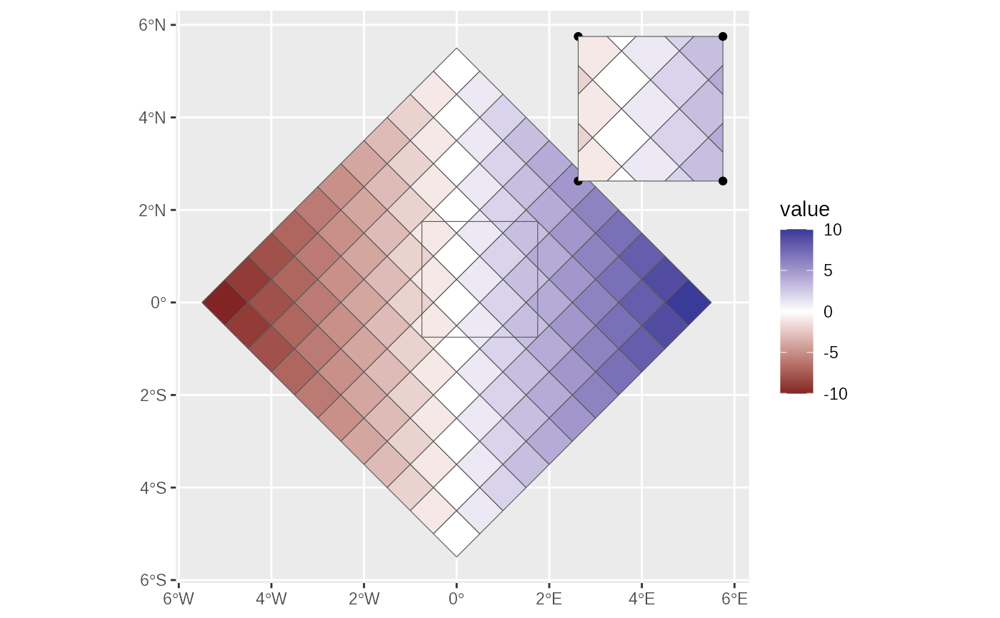

Create a new map with a pop-out panel to show areas where there is a high density of people for example. Defaults work well for London on an England only map.
Usage
popoutArea(
shape,
popoutShape = arear::londonShape,
popoutPosition = c("NE", "NW", "SE", "SW"),
popoutScale = 3,
nudgeX = 0.25,
nudgeY = 0.25
)Arguments
- shape
The original shape
- popoutShape
The mask shape. The outer boundary of this shape will be used as a mask to select the original shape
- popoutPosition
Which corner to place the popout NE,NW,SE or SW
- popoutScale
A factor to grow the popout area by. This is linear scale so the popout will appear the square of this factor bigger.
- nudgeX
shift the popout panel by a small amount (in coordinate units)
- nudgeY
shift the popout panel by a small amount (in coordinate units)
Value
A new map with the content intersecting the popout area duplicated, expanded and placed in the specified corner.
Examples
tmp = popoutArea(
arear::testdata$diamond11x11 %>% dplyr::mutate(value = x+y),
arear::testdata$offsetBox,
popoutPosition = "NE",
popoutScale = 1.25
)
#> although coordinates are longitude/latitude, st_union assumes that they are
#> planar
#> although coordinates are longitude/latitude, st_intersection assumes that they
#> are planar
#> Warning: attribute variables are assumed to be spatially constant throughout all geometries
ggplot2::ggplot(tmp)+
ggplot2::geom_sf(ggplot2::aes(fill=value))+
ggplot2::scale_fill_gradient2()+
ggplot2::geom_sf(data = arear::testdata$offsetBox, alpha=0)
